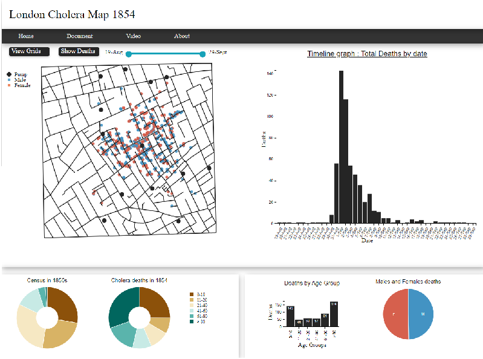

An outbreak hit the board street in London in the 1854 known as the London cholera epidemic of 1854. Dr John snow created a map of deaths in the area and established a link between the deaths to the contaminated water pump. This was the first ever created visualization which did a pictorial representation of the data and provided insightful information.
As part of this project, we are required to re-create the map using d3 which could help someone like Dr. John Snow to understand, experiment and conclude the research of relating the deaths occurring in the area with the water source.
To recreate the map, we are provided with the following files
1. A JSON file which has the (x,y) co-ordinates in segments like [ [{x1,y1},{x2,y2},{x3,y3}..],[…],….]
2. A csv file of deaths on each day of the outbreak
3. A csv file of the location of the death, age and gender in sequence of deaths occurred in file 2.
4. A general census of 1850, giving the percentage of people in each age group.
Initial Design to create a map showing deaths and a timeline bar graph showing the deaths on each day
Final design was more refined.to create a map showing deaths and a timeline bar graph showing the deaths on each day
The process was
I’ve created a dashboard of the following items which depicts the data and has ability to interact with the data to deduce meaningful insight about the data like “which age group was most impacted by the outbreak?”, “what was the percentage of population of that age group?”, “what was the ratio of male to female deaths in each age group?”, etc.
1. Map of London which shows the deaths, gender and age of the deceased.
2. A time line bar graph, where each bar depicts the total deaths on each day.
3. A pair of donut charts. First shows the census by age group and the second shows the deaths by age group.
4. A bar chart showing the total deaths in each age group and a pie chart showing the male to female ratio of deaths.
5. Ability to draw grid lines based on a number n which generates n X n grids on the map and hover over the grid to see the total deaths within the grid.
6. A range slider to see specific range of days’ death on the map.

Apart from these I’ve also added a “show deaths” button which animates the deaths on the map occurred by date. Basically, it shows where the deaths began and where people died during the outbreak by passing time.